Technical Design Document: lab report delivery portal for Company A, Vijayawada
The core slice from the brief works end to end: an LIS CSV import, an automatic report link on sign-off, a patient portal with mobile number and OTP, a report view with a plain-language summary of out-of-range values, and a front-desk console that finds a patient, resends a link, shows delivery status and the access log. Roles: patient, front-desk staff, a lab admin who approves wording, reviews the AI and reads the delivery report, and a referring doctor. Beyond the core slice, both optional must-haves are built too: the referring doctor view and the delivery and access report.
| Brief, must have | Status |
|---|---|
| Patient login by mobile and OTP, orders with status, PDF download | Built. OTP with lockout, family on one number, status per report, PDF (a marked stand-in, A7). |
| Automatic SMS with an expiring link when a report is signed, fed by the LIS export | Built, with SMS mocked. Link created in the same transaction as sign-off; 72 hours; one report per link. |
| Plain-language summary of out-of-range values in English, Telugu and Hindi | Built. Rules plus locked templates; AI paragraph for tests without locked wording, checked before showing. Telugu approved from the design copy, Hindi waiting for approval to show the approval step. The demo catalogue has 4 tests, 2 of them locked; the brief's 30 locked tests need the lab's own list and doctor-approved wording (section 11). |
| Front-desk console: find a patient, resend links, delivery status, access log | Built, plus callbacks, flags, add a family member, wording approvals and the AI review. |
| Referring doctor view of the last 90 days | Built (optional depth). A doctor role tied to one referring doctor: their patients only, last 90 days, full values including critical ones, the signed PDF, and whether the lab has reached a critical patient yet. Every opening is logged. |
| Delivery and access report for the operations head | Built (optional depth). 7, 30 or 90 days against the brief's targets: share opened online vs 80%, time to first open, critical calls, wrong-person signals, the funnel from signing to reading, and who opened what. |
One Next.js app, server rendered. Patient pages are rendered on the server and ship little JavaScript, which suits old phones on 3G. UI and server logic share one language (TypeScript), which is the fastest way for one person to deliver a tested slice in a week. Django or Laravel with Postgres would also fit; Next.js was chosen for server rendering, one language end to end, and speed for a solo build.
Next.js 16, not 14. The plan said 14, but npm audit showed critical advisories on the 14 line with no fix. 16.4.5 has a clean production audit.
Structure. lib/domain holds pure rules (flags, critical limits, tokens, phone, OTP), each tested on its own. lib/import, lib/auth, lib/summary, lib/ai, lib/patient, lib/staff hold services that use the database. app/ routes are thin. SMS and AI sit behind small interfaces (SmsProvider, SummaryWriter), so a real SMS gateway or an India-hosted model is one more class.
Hosting in India. The database is in Supabase's Mumbai region and Vercel functions are pinned to Mumbai (bom1). The AI receives no personal data (section 5).
17 tables in Prisma 7 (one schema file per group, one commit per group), changed only by forward migrations. Highlights:
| Table | Holds | Design choice |
|---|---|---|
| Household | One mobile number | Stored as an HMAC for lookup, AES-256-GCM ciphertext for sending SMS, and a masked form for display. Consent version and time; when first-time setup was finished. |
| Patient | A family member | Unique by household and name: one number covers a family. The relation to the number holder comes from the LIS and can be corrected by the number holder from a fixed list (A29); re-import never overwrites it. |
| StaffUser, ReferringDoctor | Who signs in with a password | Roles FRONT_DESK, LAB_ADMIN and DOCTOR. A doctor account points at exactly one ReferringDoctor (unique), which is how every doctor query is scoped. |
| TestDefinition, Analyte | Tests and what they measure | Critical limits on the analyte; a locked flag for tests with approved wording. |
| Report, Result | One test on one order | Order plus test is unique (re-import is safe). Each result keeps the range printed on its report and the value as printed; the flag is computed by rule on write. |
| ReportLink | The SMS link | Only the token's hash is stored. Delivery, opening and revoke times. |
| OtpChallenge | One code | Hash only, attempts, lock. Not linked to a household, so unknown numbers look the same. |
| Session | A signed-in browser | Server-side, so it can be ended at once. Kinds: PATIENT, LINK (one report), STAFF. |
| AccessLog | Every opening and step | Append only: a database trigger refuses UPDATE, DELETE and TRUNCATE. Plain ids, no foreign keys, so it outlives what it describes. |
| CallbackTask, PatientFlag | Work for staff | A partial unique index allows one open critical call per report. |
| SummaryTemplate | Locked wording | Versioned per key and language, DRAFT or APPROVED, source human or AI. |
| AiSummary | Every AI attempt | Shown, refused or failed, with the checker's reason and the reviewer's verdict. |
| ImportBatch, ImportRow | Each LIS file and row | A sentence per bad row; the file's hash. |
The link page only checks the token. Opening the report needs a tap, because message apps fetch links to draw previews. The tap opens a session for that one report, capped at 2 hours and never past the link's 72 hours, and logs LINK_OPENED. Consent comes first. An expired or revoked link shows "We tied this page up for you" and offers a code.
Mobile number, then a six-digit code that lasts 10 minutes. The first time a number signs in: consent, then a two-step setup (how to read reports; who is on this number, with the lab's guesses filled in). Five wrong codes pause the number for 15 minutes; a resend waits 60 seconds; at most 5 codes a day (A19). An unknown number gets the same screens but no SMS. Codes are stored as keyed hashes and compared in constant time. Signing in opens the whole family's file, including pages whose links expired (A28).
Every report read joins through the session's own household, so an ID typed into the URL can never reach another family (tested). The opening is logged in the same transaction as the link's open count. Simple mode shows one result at a time with a ruler; Compact shows all results and the trend since the last report.
The patient sees no number, no summary and no flag words: "Please call us about your report", with the first step already ticked ("We have asked our team to call you", with the time). The callback task was created with the report's link. Staff see the value and range on the desk. The AI is never involved.
Search by full number (matched by hash), last four digits or name. Opening a record is logged; the full number is shown only on request, and that is logged too. Resend revokes the old link at once and sends a new one. Calls are marked done with a note; flags are resolved with a note.
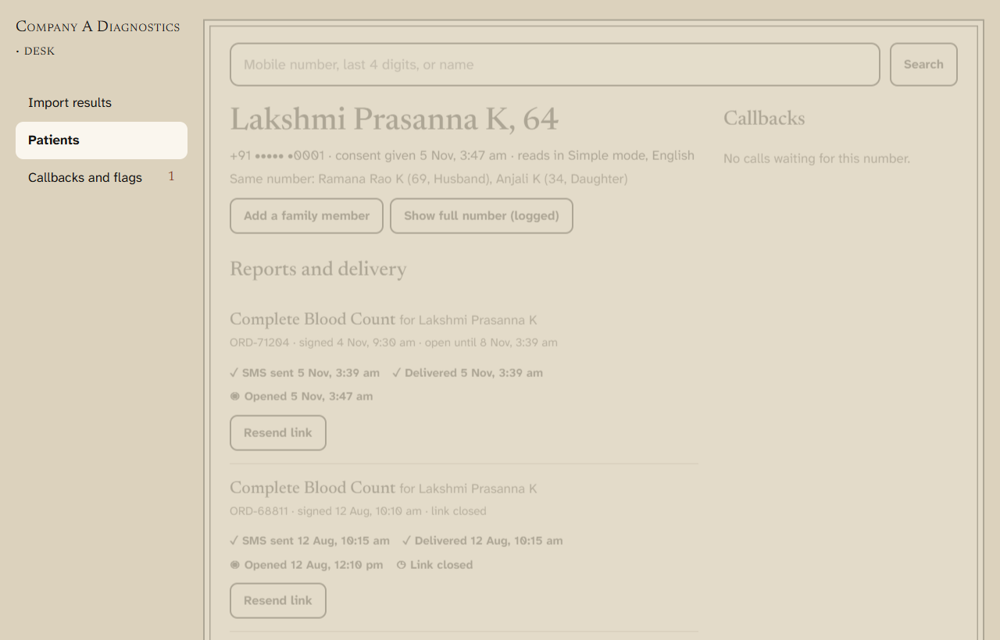
The patient desk: the family on one number, each report with SMS, delivery and opening times and Resend, the access log, and the calls waiting for this number.
Doctors sign in on the staff page with an account the lab issues. Their page lists only reports where they are the referring doctor, signed in the last 90 days or ordered then and still being prepared: critical first, then being prepared, then newest, with the out-of-range values written in each row so most reports need no click. A doctor sees full values, critical ones included, because they are the clinician, and sees whether the lab has reached a critical patient yet, so they do not call blind. They never see a phone number. Another doctor's report, an old one or an unsigned one all give the same "not found", and nothing is logged; every report actually opened is logged as DOCTOR_VIEWED_REPORT. Any desk page sends a doctor back to their own list (tested).
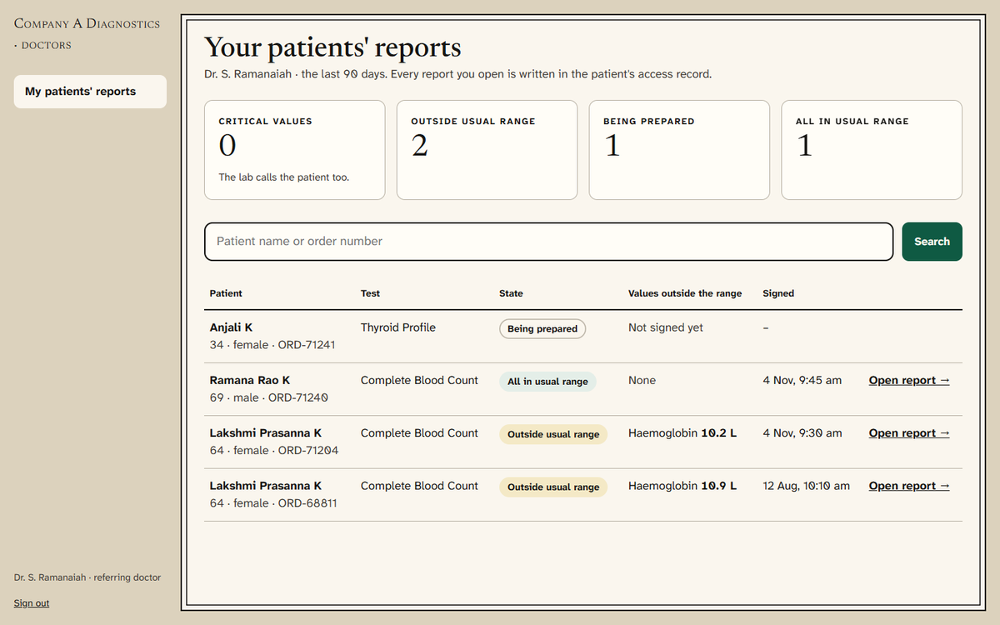
For the operations head (the lab admin account stands in, A31). It reads the brief's success measures from data the app already keeps. "Delivered digitally" means the patient opened the report online, not only that the SMS arrived (A33). Each headline number carries a met or not-met mark and a word. The trend chart shows one series in one colour, the 80% target as a labelled line, a tooltip per day and a table view. At 2,000 reports a day the same numbers would come from a nightly roll-up table instead of live rows.
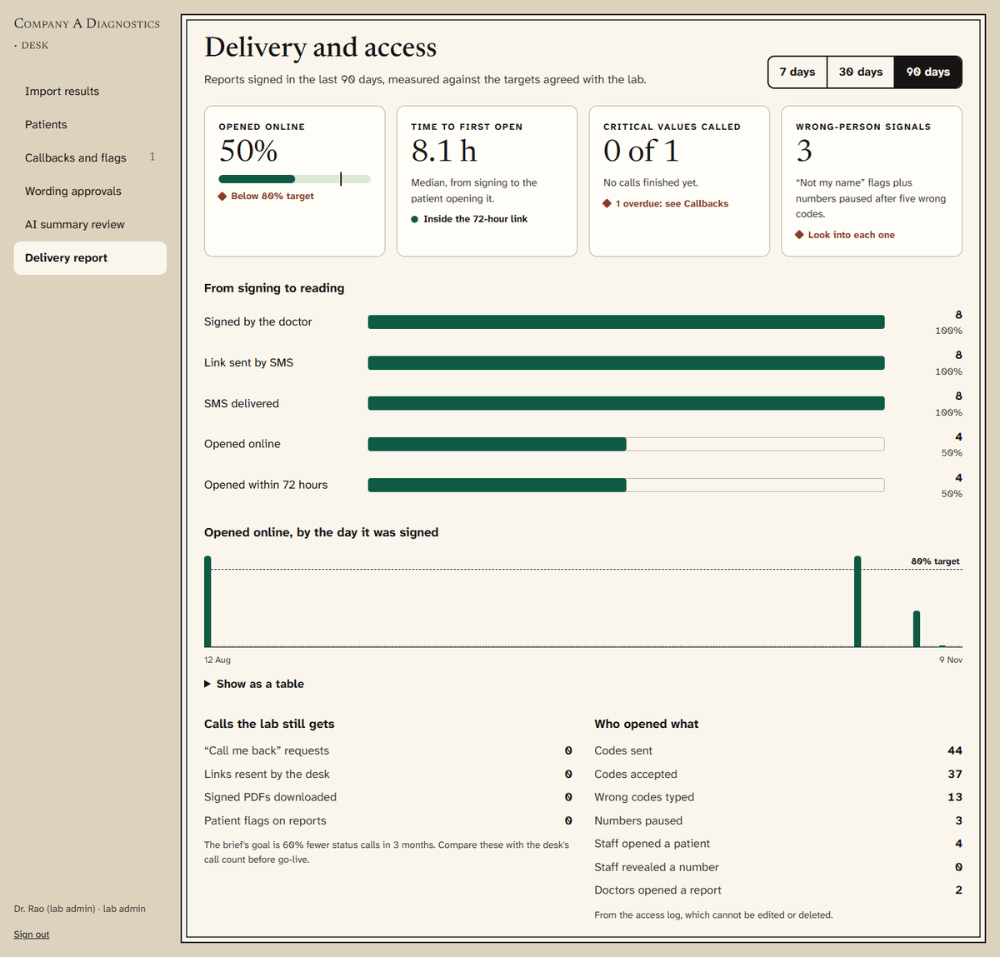
Rules decide every flag. Locked templates supply every sentence. The AI writes only the short "In short" paragraph, and only for tests without locked wording, and only if a checker passes it.
gemini-3.5-flash-lite on the free tier (A34), and Claude claude-opus-5-5 at low effort is supported by setting its key instead. The model receives only test name, analyte names, values, units, printed ranges and the rule's words. No name, phone, age or order ID.The design idea is "your health file, kept by people who know you": every report is a page in a file, behind an index tab. The client values minimal, purposeful design, and many patients are elderly on small phones, so every screen has one main section and one green next step, large type, and plain, calm words. Status is always a word plus a mark, never colour alone, so it also reads in black and white and for colour-blind readers. There is no red anywhere a patient looks. Spacing sits on a 4 px grid; all lines are clean vectors.
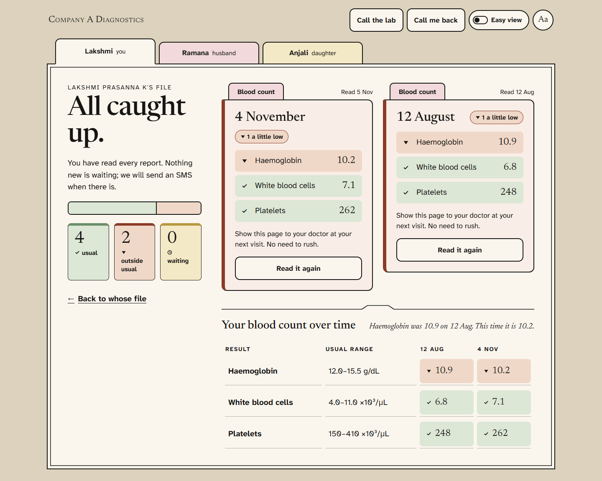
A person's file on a laptop: where things stand on the left (a bar of results in and outside the usual range, three counts), each page as a card with its results in the lab's rule words, and each test over time. Every sentence comes from approved templates.
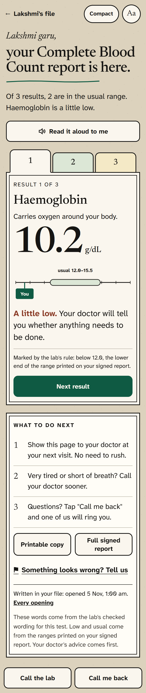
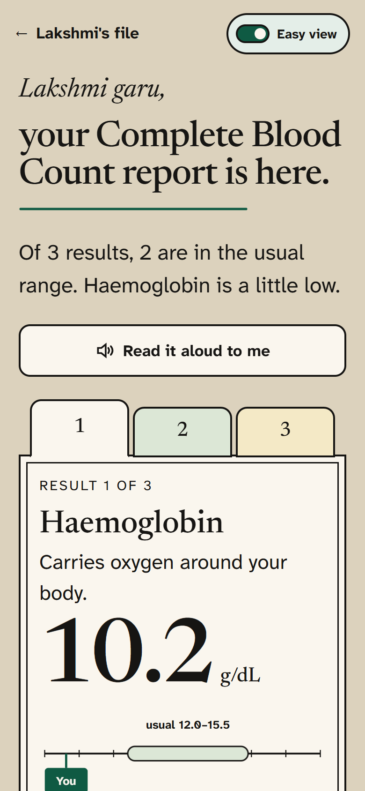
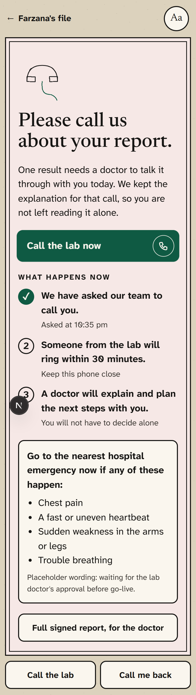
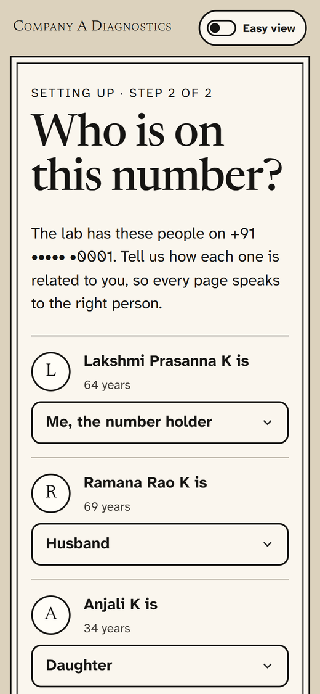
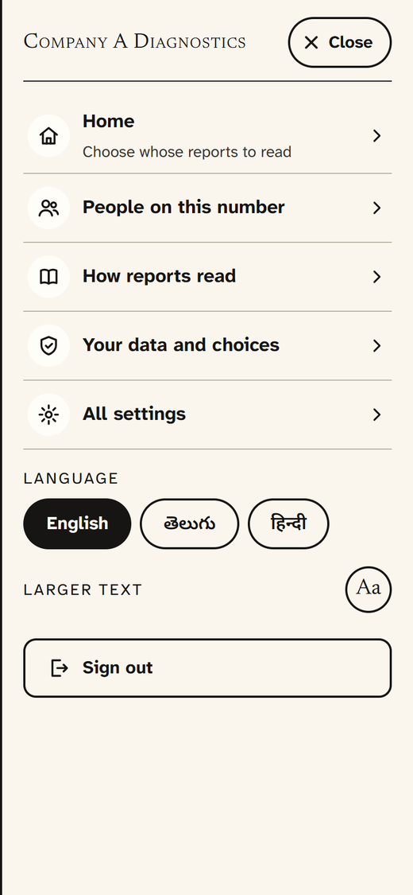
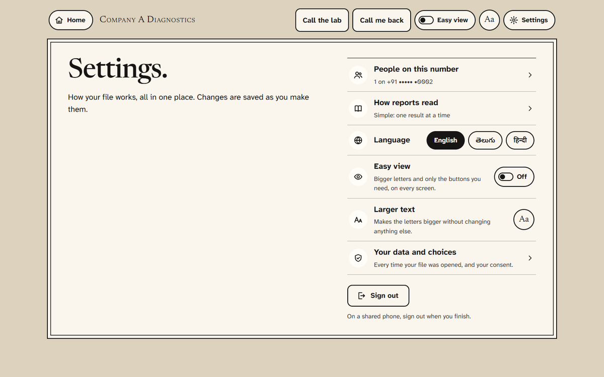
Settings on a laptop: one list; rows that open a page end in a chevron, rows that change at once hold their own switch. On laptops the header has Home, the call buttons, Easy view, Aa and Settings.
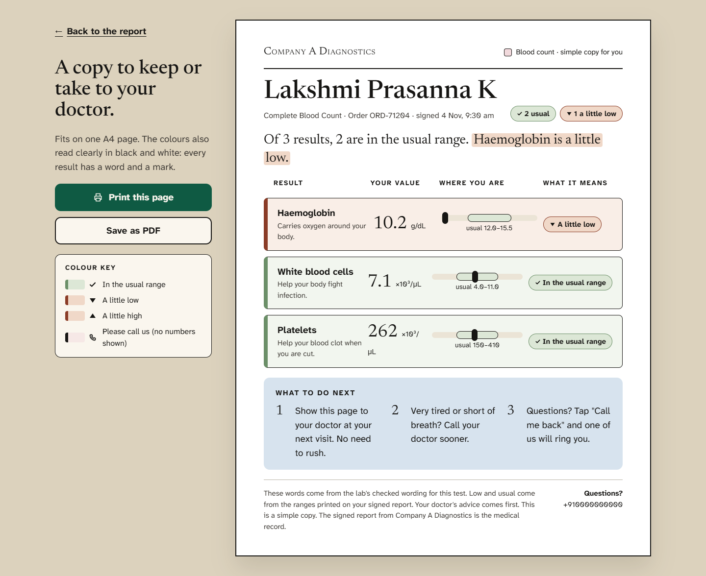
Printable copy: one A4 page with a colour key; Print opens the dialog, Save as PDF downloads the same simple copy. On phones the page becomes cards with a sticky Print and Save bar.
| Decision | Why |
|---|---|
| One layout system: 480 px phones, 720 px tablets, up to 1280 px laptops; two columns on laptops | Families read on phones and laptops; staff on desktops. No long scrolling on a laptop, one column on a phone. Each screen's main action is checked to sit in the first screenful at 1366x768 down to 360x640. |
| Easy view switch on every screen, also set by choosing Simple | Older readers get bigger text and only the essentials: one clear action plus Call the lab. Pure CSS, so it switches instantly with no reload. |
| Home in words on every signed-in screen; the lab name is plain text | A logo that secretly links home is a convention many older users do not know. Home always means one place: choosing whose reports to read. |
| A menu on phones and tablets, a Settings link on laptops | Phones fit three header controls (Home, Easy view, Menu); only secondary items live in the menu, never a screen's main action. Laptops have room, so nothing hides there. Pages with a back link keep Home in the menu on phones. |
| First-time setup in two labelled steps | People see when setup ends. Confirming who is on the number costs one tap and prevents a health report greeting the wrong person. |
| Desk and doctor pages: numbers lead, words explain them, met or not met is a mark plus a word | The operations head should read the page in ten seconds; nothing relies on colour alone. |
| Call the lab and Call me back on every screen (header on laptops, bottom bar on phones) | The brief's goal is that patients never have to hunt for help. |
| Tabs, Back and Next are plain links; forms are plain posts | Everything works before JavaScript loads on a slow phone. |
| Fonts self-hosted and split by script | No call to Google Fonts; a phone downloads Telugu glyphs only when a page shows Telugu. |
| Telugu and Hindi get taller line height and a smaller display size | The scripts are taller; buttons grow and never clip. |
| Motion only where it means something: pages settle in, a loading bar along the top, buttons press, the green arrow nudges forward, cards lift when they open, result rows arrive in order, the proportion bar grows, the ruler finds the value, the call button breathes | Each one answers a question (did my tap work, where does this go, what is this bar). Transform and opacity only; all of it stops under reduced motion. |
| One notice layout for expired, invalid, timeout, empty, error, withdrawn | Every dead end says what happened and what to do next, signed by the front desk. No dead buttons anywhere. |
.gitignore was the first commit. Phone numbers hashed and encrypted; tokens and codes stored only as keyed hashes.| Kind | Count | What it proves |
|---|---|---|
| Unit (Vitest) | {{UNIT}} | Flags and boundaries, critical limits, 72 hour links, phone rules, OTP limits, CSV reading and row errors, summary builder (no free text), AI checker, staff and doctor permissions. |
| Database (Vitest, real Postgres) | {{DB}} | Idempotent import with the brief's three orders, links on sign-off, critical calls, OTP sign-in and lockout, IDOR and consent rules, link sessions, call-backs and flags, resend, staff lockout, AI summary paths with fake writers, append-only log, relation rules, doctor scoping, delivery report counts. |
| End to end (Playwright) | 6 | Sign in to a report explained by rule; a critical page with no value; five wrong codes pause the number; the menu to settings to change a relation and back Home; a staff import listing bad rows; a doctor seeing only their own patients and refused from the desk. |
Logic was written test first, visibly in the git history (a test: commit, then a feat: commit).
First load measured on the production build at 390 px: about 155 KB transferred per page without fonts, of which about 135 KB is the React and Next.js runtime and about 20 KB is this app's code and CSS. This misses the 150 KB budget by about 5 KB; the next step is to drop the remaining client components from pages that do not need them. Fonts are a one-time, cached download. Every screen has a loading, empty and error state. Accessibility: real buttons, links and labels; each code box labelled; the ruler is one image with a full-sentence label; 3 px green focus ring; body text contrast above 7:1; touch targets at least 48 px.
Everything the brief does not say and the build had to decide, as kept in docs/ASSUMPTIONS.md: